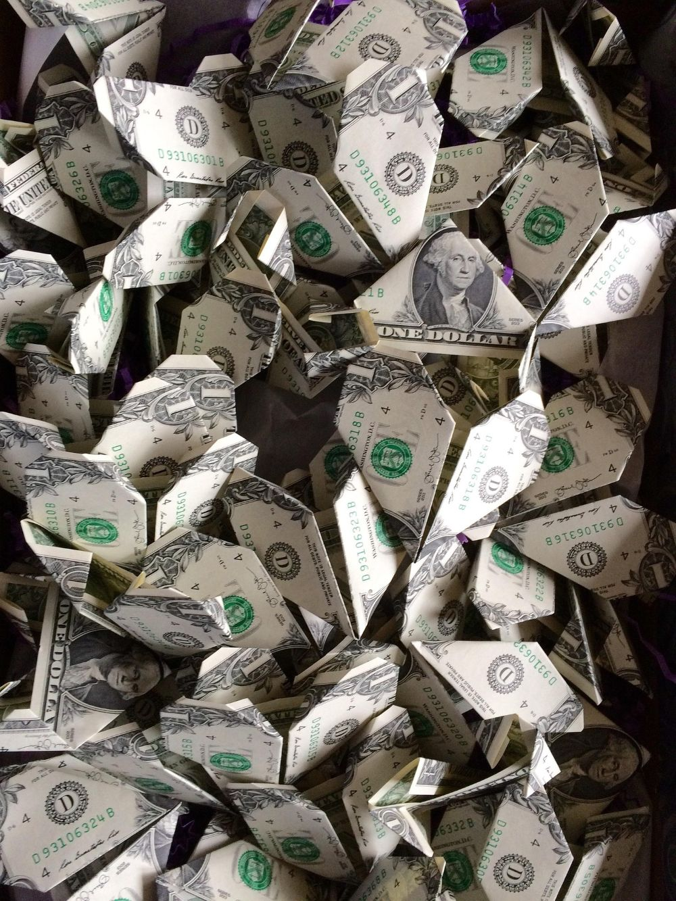
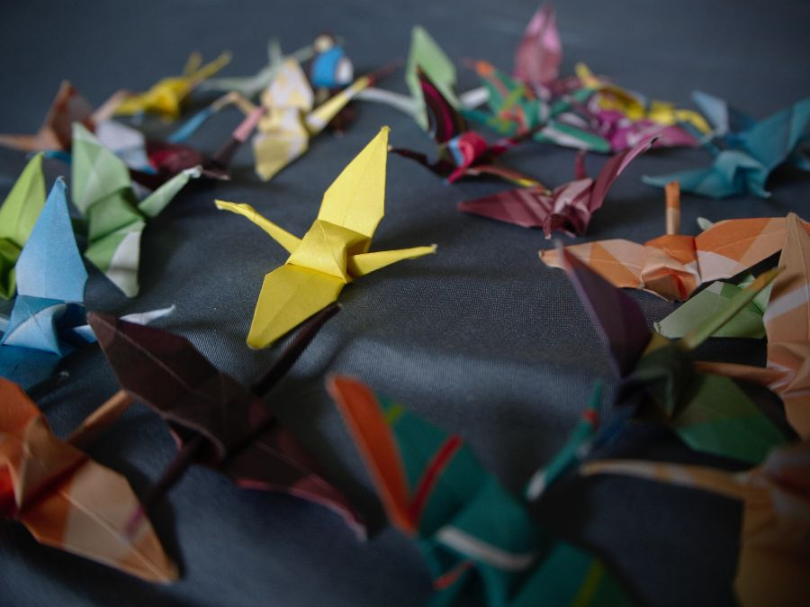

Crane
Free designs by and for origami enthusiasts

Mission Statement
Origami is a fun and wholesome hobby that many people around the world enjoy practicing, however it can often be difficult to find designs if you don’t know where to look. Like magicians, many masters of origami closely guard their techniques and designs to keep others from recreating them. Crane aims to break that age old tradition and share original, user-created designs openly with the community. Whether you’re looking for advanced diagrams or just starting out, Crane has something for you. All content is user created and openly available to fold without a subscription of any kind. Interested in sharing your own designs? Crane offers an easy way to upload, share, and review any and all projects that you create. Please make sure that they are your original designs and appropriate for all audiences. Hate will not be tolerated on Crane.
